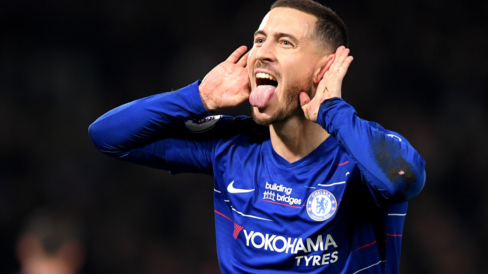

Chelsea's Icon Eden Hazard
Belgian former professional footballer

Iconic Solo Goal against Westham
Here's a time-line of his Career..
Eden Michael Walter Hazard (born 7 January 1991) is a Belgian former professional footballer who played as a winger or attacking midfielder for Lille, Chelsea, Real Madrid, and the Belgium national team. Known for his dribbling and creativity, he is regarded as one of the best players of his generation.
- 2005- Early Lille career
- 2008-2010- Debut season and individual success
- 2010-2011- League double, Ligue 1 Player of the Year and continued individual success
- 2011-2012- Final season in France
- 2012-2013- Debut season and first trophy
- 2013-2015- Premier League winner and individual success
- 2015-2016- Year of scrutiny
- 2016-2018- Return to form, Premier League winner and first FA Cup win
- 2018-2019- Final season in England
- 2019-2021- Fitness struggles and decline in form
- 2021-2023- Continued struggle, departure, and retirement
- 2009-2011- Early international career and first major tournaments
- 2014-2022- Belgium's Golden Generation and assuming the captaincy
I try to play like I did when I was a young boy playing in my garden. Sometimes it's good, sometimes it's not so good, but I try to always make sure I give my best to help the team, even if I am not having the best game myself.
-Eden Hazard
For further Information visit this link...